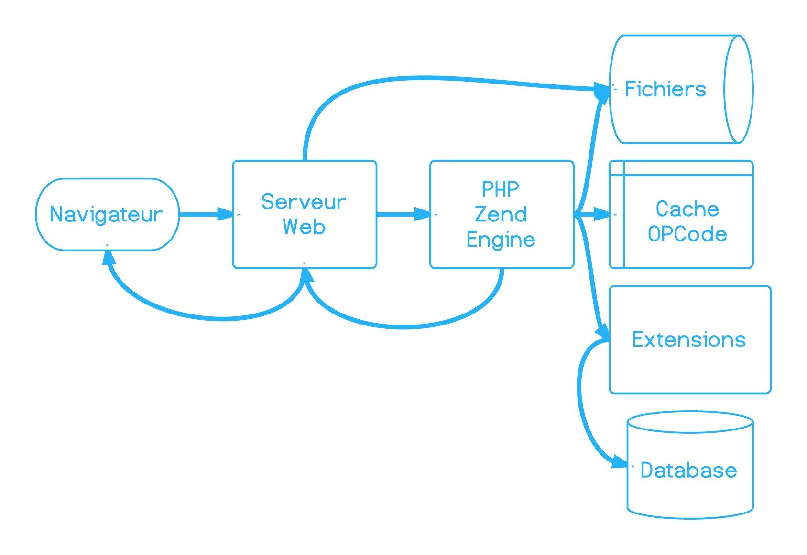
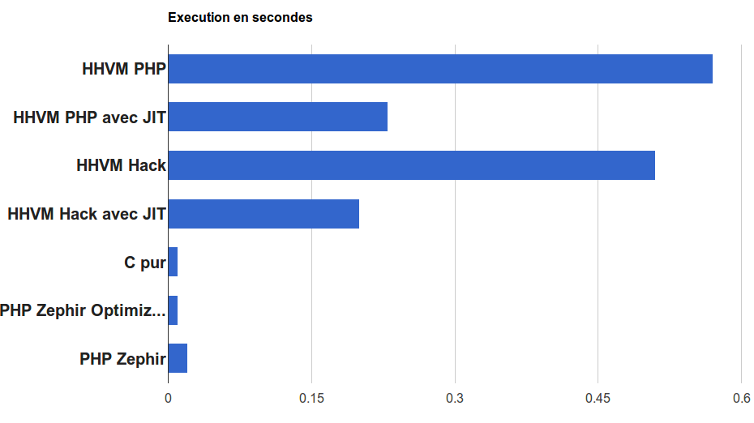
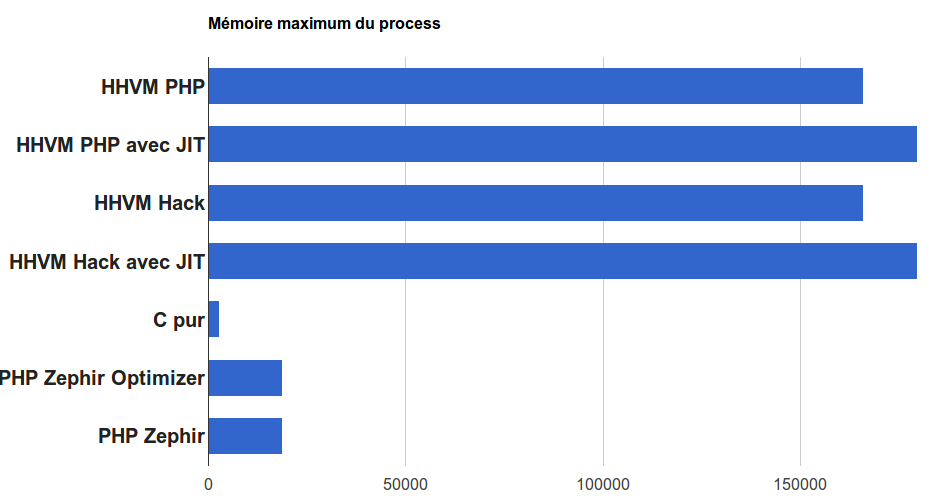

Zephir
Extension PHP pour les noobs
Présenté par Damien Alexandre / JoliCode
@damienalexandre


Conseil, réalisation, audit, expertise et formation
…Poney, Guinness et gif animé.
PHP is not slow
Plutôt un bon langage interprété.
More is less
- De plus en plus de fonctionnalités ;
- De plus en plus de rapide :
- 5.2 à 5.3 = ~20% plus rapide ;
- 5.3 à 5.4 = 20-40% plus rapide ;
- 5.5 = OpCache built-in.
PHP est rarement le coupable si votre site est à chier.
Pour la majorité des applications, il est très bien.
Fatal error
Allowed memory size of X bytes exhausted (tried to allocate Y bytes)...
Gourmand en mémoire
- Manipulation de binaire (images...) ;
- Algorithmes complexes ;
- Cryptographie.
- ORM...
Petit rappel
La stack PHP
- PHP Core : request, stream, erreurs… ;
- Zend Engine : OpCode et execution ;
- Couche d'extensions ♥.
Zend Engine
Interprète PHP like a boss since 1999
Les extensions
Chargés au lancement de PHP php -m !
amqp apc apcu bcmath bz2 calendar Core ctype curl date dba dom ereg exif fileinfo filter ftp gd gettext hash iconv imagick intl json ldap libxml mbstring memcache memcached mhash mysql mysqli openssl pcntl pcre PDO pdo_mysql pdo_pgsql pdo_sqlite pgsql Phar posix Reflection session shmop SimpleXML soap sockets SPL sqlite3 standard sysvmsg sysvsem sysvshm tokenizer wddx xdebug xml xmlreader xmlwriter Zend OPcache zip zlib...
Pourquoi faire une extension
- utiliser des API systèmes non accessibles via PHP ;
- obfusquer du code pour le vendre $$$$ ;
- devenir une star sur http://pecl.php.net/ ;
- améliorer les performances !
Pourquoi en Zephir ?
Zephir
- Ze(nd Engine) Ph(p) I(nt)r(mediate)
- Mix de PHP et de C...
- ... écrit en C et en PHP ;
- Encore en Alpha ;
- Base de PhalconPHP 2 ;
- Qui se souvient de HPHPc ?
Le langage Zephir
- Fichiers
.zep; - Fortement typé, ou pas ;
- Compilateur en PHP ;
- Apporte de nouvelles instructions ;
- Fait pour être rapide.
Permet
à un développeur haut niveau (PHP) de faire une extension bas niveau
Merci, au revoir.
Les différences avec PHP
- pas de
<?php; - pas de
$pour les variables ; - tout en objet et namespace ;
- tous les noms de fichiers en lowercase ;
- pas de pointeur (
&) ; - il faut pré-déclarer toutes les variables.
Les différences avec PHP, épisode 2
letdevant chaque modification ;- pas de variable globale ;
- moins "productif" ;
- le type hint avec des crochets :
function test(<Coucou\Test> foo) - et il faut compiler pour tester.
namespace Test;
class MyTest extends SomeNamespace\MyAnotherClass
{
public function someFunction(a, b)
{
return a + b;
}
}Ça sent pareil mais s'en est pas.
Toujours intéressé ?
Installation !
Quelques pré-requis
- php5-dev
- phpize
- gcc, make... (ce que vous voulez)
- json-c
Installation
$ git clone https://github.com/phalcon/zephir
$ cd zephir
$ ./install -c
$ zephir help _____ __ _
/__ / ___ ____ / /_ (_)____
/ / / _ \/ __ \/ __ \/ / ___/
/ /__/ __/ /_/ / / / / / /
/____/\___/ .___/_/ /_/_/_/
/_/
Zephir version 0.3.10aLive Demo
Effet Bonaldi : Toute démonstration d'un produit quelconque qui fonctionnait parfaitement aux répétitions foirera lamentablement lors de la démonstration publique.
Array
// string keys
let elements = ["foo": "bar", "bar": "foo"];
// numeric keys
let elements = [4: "bar", 8: "foo"];
// mixed string and numeric keys
let elements = [4: "bar", "foo": 8];Ni comme en PHP, ni comme en JSON.
Elseif
if false {
echo "false?";
} else {
if true {
echo "true!";
} else {
echo "neither true nor false";
}
}We need to go deeper.
Foreach
let items = ["a": 1, "b": 2, "c": 3, "d": 4];
for key, value in items {
echo key, " ", value, "\n";
}Plus proche de Javascript.
Fetch
<?php
if (isset($myArray[$key])) {
$value = $myArray[$key];
echo $value;
}if fetch value, myArray[key] {
echo value;
}Getter et setter
namespace App;
class MyClass
{
protected myProperty {
set, get, toString
};
protected someProperty = 10 {
set, get
}
}config.json
{
"namespace": "hello",
"name": "Hello Extension",
"description": "An extension doing nothing!",
"author": "Bob l'éponge",
"version": "0.0.1"
}PHPInfo
{
"info": [
{
"header": ["Directive", "Value"],
"rows": [
["setting1", "value1"],
["setting2", "value2"]
]
}
]
}Aller plus loin
- Optimizer : remplacer des appels de fonctions ;
- CBLOCK : injecter du C !
Optimizer
- Classe PHP dans
/optimizers; - Remplace n'importe quelle fonction ;
- Manipulation des Headers ;
- Utilisé par Zephir lui-même.
StrlenOptimizer.php
$context->headersManager->add('kernel/string');
$resolvedParams = $call->getReadOnlyResolvedParams(
$expression['parameters'],
$context,
$expression
);
return new CompiledExpression(
'int',
'zephir_fast_strlen_ev(' . $resolvedParams[0] . ')',
$expression
);zephir_fast_strlen_ev => Z_STRLEN_P()
WhateverOptimizer.php
- Phalcon 2 utilise le code C de Phalcon 1 ;
- Ajoutez vos propres headers et fichiers C ;
- Si Zephir vous limite, vous avez la main ;
- Aucune limitation lié au langage.
CBLOCK
- Injecter du code en pure C ;
- Dans les headers, avant la classe, dans une méthode...
- A réserver aux pros (non documenté).
Syntaxe CBLOCK
%{
#include "kernel/require.h"
}%%{
// c implement fibonacci
static long fibonacci(long n) {
if (n < 2) return n;
else return fibonacci(n - 2) + fibonacci(n - 1);
}
}%/!\ CBLOCK /!\
Sérieusement, c'est dangereux.
Shut up
Take my money
Zephir sux
- Pas facile de débugguer (stack trace) ;
- Si ça foire, tu sais pas lire le code C ;
- todo ;
- C'est encore en Alpha - patience.
D'autres solutions
Les alternatives
HHVM
- Remplacement de Zend Engine ;
- Nouvelle syntaxe typée Hack ;
- Supporte 96% de ZF2 et 97% de Symfony2 (src).
Les alternatives
PHP-QB
- Sous forme d'extension ;
- Spécialisé dans les traitements binaires ;
- Execute lui-même les méthodes taggués
@engine qb.
Les alternatives
PH7
- Permet d'executer du PHP depuis C ;
- Non en fait non ;
- Oubliez celui la.
Les alternatives
Phalanger
- Runtime et compileur PHP pour .NET ;
- Faite tourner du PHP sur le serveur ASP.NET de l'école !
- Visual Studio et tout !
Les alternatives
KittenPHP
- Le nom déchire ;
- PHP vers C++ ;
- Documentation en Russe (vk.com).
Les alternatives
PHP CPP
- Librairie C++ pour développeur PHP ;
- S'occupe de toute la gestion du Zend Engine ;
- Création d'extension facilité.
Performances
Attention il y a un benchmark
qui arrive.
HHVM vs Zephir vs PHP
HHVM vs Zephir vs PHP
PhalconPHP 1 & 2
- Phalcon 1 en pure C : 2107 req/s ;
- Phalcon 2 en Zephir : 2120 req/s.
Zephir n'introduit pas (trop) de lenteur (pour l'instant).
Chacune a ses avantages
Vous avez besoin de vitesse :
- Pure ? Extension C
- Sans avoir un développeur C ? Zephir
- Sans changer votre code ? HHVM
- En gardant ZendEngine ? OpCache
- Sans rien toucher ? Mastercard ©
Une question de balance
- Deadline ?
- Confiance dans le code ?
- Équipes solides ?
- Est-ce vraiment utile ? PHP est-il vraiment le goulot ?
Pour conclure
PHP is a language that optimizes for speed of development, not speed of execution. Jonathan Klein (Etsy)
Et Zephir fait l'inverse \o/
Conclusion
Zephir est un outil pour créer des extensions maintenable par des développeurs PHP.
Vous coderez moins vite qu'en PHP mais plus qu'en C.
Vous avez l'interdiction de refaire toutes vos applications avec. Attention je vous surveille.
A vous de jouer
Merci \o/
@damienalexandre